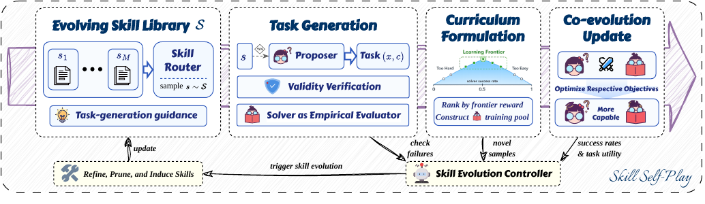

01研究背景与问题定义
自博弈想用模型自己生成的题持续训练模型，但复杂任务首先面临“题目是否成立”的问题。错误答案、矛盾约束或不可执行的工具契约，会让求解失败看起来像高难度，出题器反而可能因制造坏题而获得奖励。事后过滤能丢弃坏题，却不能自动教会出题器如何稳定生成好题。
Skill-SP 将技能放在出题端：技能不是给求解器抄答案的经验，而是指导题目结构、约束和验证的可演化先验。它同时维护出题器、求解器与技能库，使“可验证有效”成为进入课程的前提，再把难度集中在当前求解器有部分成功可能的区域。
| 要求 | 单独优化会出现什么问题 | 本文的处理 |
|---|---|---|
| 任务有效 | 不可解被误判为困难 | 结构、契约和探测一致性门控 |
| 处于学习前沿 | 过易无增量，过难没有正例 | 成功率接近一半时奖励最高 |
| 持续覆盖新结构 | 固定技能反复制造熟悉题型 | 技能流与无技能探索流混合 |
02方法与技术路线
训练在每轮先冻结当前求解器作为出题评估对象，构建有效课程，再分别更新两个策略；技能控制器把本轮反馈用于下一轮出题。
技能流
按历史产出与探索需求选择技能，生成可见题目 x 与隐藏验证契约 c。
开放探索流
不附技能限制，寻找已有库之外的新任务结构。
动态课程
复用求解探测估计成功率；两路分别按前沿奖励选题，再混合为训练池。
Proposer 更新
学习生成有效且不过易/过难的题；当前 solver 提供难度参照。
Solver 更新
只看题目，按环境验证结果优化；隐藏契约不作为输入。
技能提供结构先验，验证提供准入边界
技能包含如何构造某类问题的规则与相应校验器，路由兼顾高产出技能和未充分尝试技能。开放探索保留发现新结构的机会；只沿现有技能采样会让课程逐渐窄化。
工具任务的有效性并非一条“LLM 判断正确”指令。技能流需要满足全局格式、技能契约和 probe 一致性：当前 solver 多次作答形成唯一多数答案，并与出题器的参考一致。探索流不使用技能专属校验。这种校验能削弱错误契约，却也把准入依赖于当前 solver：完全超出其能力的有效题可能难以进入。
前沿奖励为什么要与有效性相乘
有效题的 proposer 奖励为 1−2|v−0.5|，v 是当前 solver 成功率。v=0 或 1 时奖励低，部分可解时更高；若题目无效，则不能借“没人答对”冒充困难。探测 rollout 同时用于有效性判断和难度估计，避免为两个目的完全重复采样。
求解器优化的仍是解题正确性，而不是中等难度奖励。两种目标分开后，出题器负责寻找可学习区间，求解器负责跨过区间；下一轮再用更新后的 solver 重测，从而形成移动课程。
技能进化怎样防止静态课程耗尽
控制器用失败生成的轨迹修订技能规则或校验逻辑，用持续低前沿收益识别已饱和技能并归档，再从探索流中抽取有价值的新结构。技能更新改变的是未来题目分布；它不会把过去失败题直接改成 solver 的成功奖励。
工具调用实验每轮课程混合两条流，且技能诱导主要由同一骨干完成，没有默认调用更强教师。这使收益更接近出题结构的自我组织，但初始库、验证器以及可靠探测仍构成重要外部支撑。
论文原始结构图 · 点击对照

03实验设计与结果分析
结构指导是否改善最终能力
| 条件 | 结果 | 解释 |
|---|---|---|
| 较成熟 Qwen / Granite 底座 | 平均提高 2.8–6.5 个百分点 | 收益跨不同工具子任务出现 |
| Ministral-3-8B | 提高 42.9 个百分点 | 起点存在严重 schema 失配，不能外推为普遍幅度 |
| Uniform 路由 | 较完整系统低 1.9 个百分点 | 路由分配有增量价值 |
| Frozen 技能库 | 较完整系统低 2.3 个百分点 | 静态结构先验不足以替代动态演化 |
结果首先说明结构约束能解除自博弈的启动失败，而不只是把已有训练循环调得更好。逻辑谜题中，无指导自博弈甚至难以构建有效训练池；但最难的 Large / X-Large 上，弱底座仍进步有限，符合“自生成监督需要最低能力门槛”的边界。
路由和冻结消融支持对应组件有用，却不能把整个系统增益等同于某个单一“技能语义”的贡献：有效数据数量、题目分布和训练稳定性都随组件变化。
课程质量的收益由谁付出成本
| 组成 | 份额 |
|---|---|
| Proposer 优化 | 24.3% |
| 求解课程构建 | 57.0% |
| Solver 优化 | 10.2% |
| 技能库演化 | 6.5% |
| 留出评测与其他 | 2.0% |
主要时间花在构造和验证课程，而不是技能文本维护。这个分布说明有效监督是昂贵资源；不能把“无需外部教师”直接解释为低训练成本，也不能仅凭技能库只占 6.5% 就忽略验证 rollout 的开销。
04贡献、局限与综合评价
贡献在于让任务生成成为可控的学习对象
技能库把生成先验、验证器和历史统计连接起来，使任务质量可以在出题之前被主动约束，又可被执行反馈修正。前沿奖励则把“生成多样题”推进为“为当前能力生成有用题”。两者的耦合是论文最值得学习的课程设计思想。
短期学习前沿不等于长期最优课程
接近一半成功率使任务有训练信号，适合作为当前轮的选择原则；但某些基础结构可能当下很容易，却是后续组合任务所必需的准备，另一些新结构短期很难，却有更高迁移价值。归档低前沿收益技能有节约计算的作用，也可能减少这种准备性覆盖。论文的最终基准收益支持当前配方，但没有证明该奖励最大化长期课程价值。更有力的比较应在同预算下为已饱和技能保留少量复习与组合名额，检验长期遗忘及组合迁移，而非只看下一轮平均成功率。
有效性与新颖性仍有内在张力
probe 一致性依赖当前 solver，意味着一类真正新颖、难以形成多数答案的任务可能被排除。已知结构内的可靠学习与跨越未知结构的探索不是同一件事；探索流缓解了覆盖问题，却没有消除验证门对能力边界的依赖。
可进一步固定有效题数量与计算预算，对比同一批结构经不同准入规则进入课程后的迁移能力。若新结构更多但短期准确率稍低的课程在留出组合任务上更强，就说明“当前前沿收益”不能完全代表长期课程价值。现有证据支持可靠任务生成与动态结构更新，对持续开放式能力增长仍应保留这一限定。